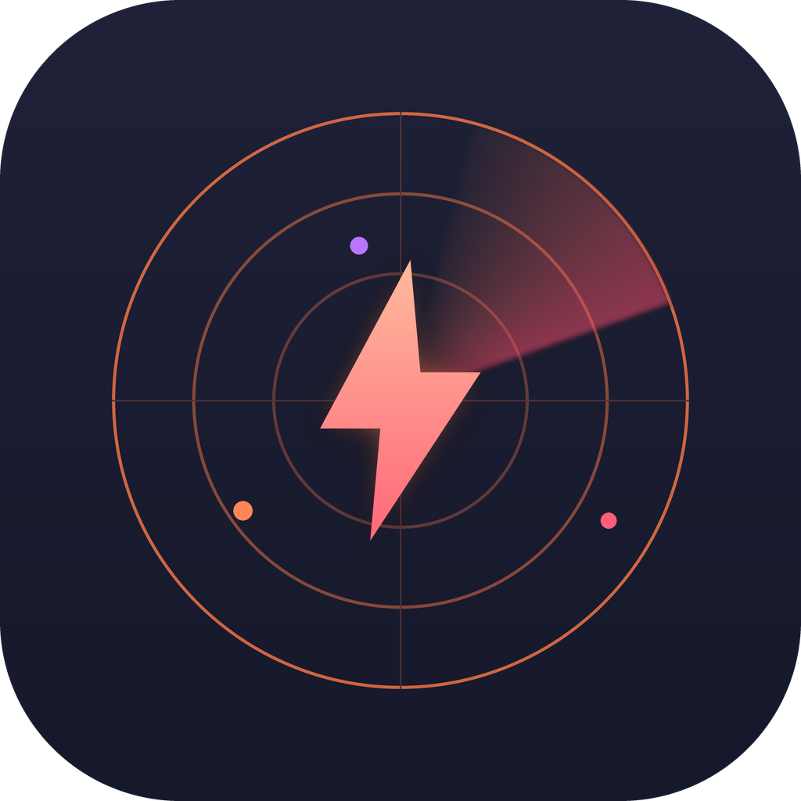
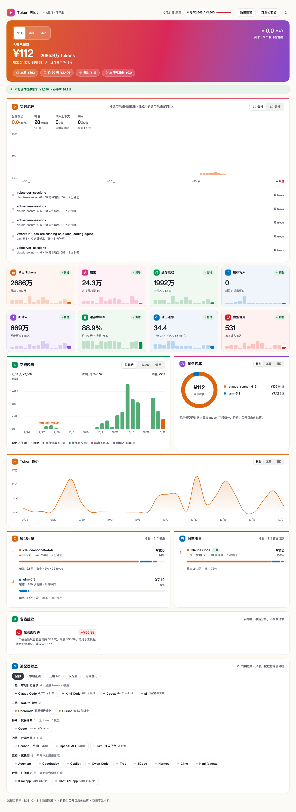

同时用 Claude Code / Codex / Kimi Code 跑国产模型的人，终于能答上「这个月给 AI 烧了多少钱」。
只读本地日志 · 数据不出本机 · MIT 开源

本地看板：本月花费、缓存省下多少、压缩潜力、宿主与模型排行
Claude Code、Codex、Kimi Code、OpenCode 的用量合并展示，不用在四个终端里各跑一遍。
DeepSeek / GLM / Kimi / Qwen / MiniMax / 混元 / MiMo / LongCat / Doubao 九家定价归一。
菜单栏直接显示 ¥今日 · 预算%，超支弹通知。macOS + Windows。
揪出反复重读同一段输出的会话，按会话列出各浪费了多少钱。
2026-10 本机实测。缓存省下的钱是实际花掉的三倍多。
# 命令行 + 本地看板
npm install -g @anthonyhan/token-pilot
token-pilot month
# 状态栏应用（macOS）
brew install --cask anthonyhann/token-pilot/token-pilot它是事后分析，不拦截请求。要节流得靠代理层，这还没做。
Kimi.app / ChatGPT.app 不写本地用量日志，只能登记固定月费。
Antigravity / Copilot / Cursor 等 12 款只能检测到装没装，读不到 token。